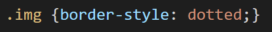
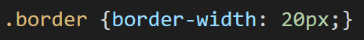
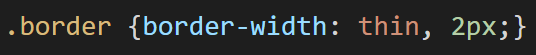
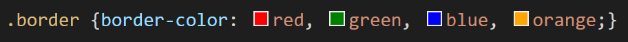
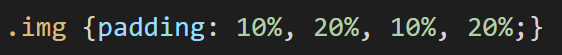

Margin, Border and Padding
Margin, border and padding are the spaces between elements and can be manipulated with CSS. Here are the definitions.
Margin:The outermost section of the page, surrounding the border
Border:The space between the margin and the padding
Padding:The space between the border and the content
When combined these elements create the CSS Box Model.

Margin
This CSS code can be used to adjust the margin of the page, just specify the desired measurement in your code after the colon:
- Margin-top:
- Margin-right:
- Margin-bottom:
- Margin-left:
To adjust all the margins in one go use the below code to specify the measurement of each side desired (the specified measurements are applied to the element clockwise):

Border
The border element can be customised in a few ways:
- Border-style:
- Border-width:
- Border-color:
The style property can change the shape of the border and includes none, dotted, dashed, solid and double.
The width property sets the width for each side of the border.
You can set one value to be applied to all sides of the border like this:
Or you can customise each side by stating up to four values, applied clockwise.
This example would apply a thin width to the top and bottom borders and 2px width to the left and right borders.
The colour property changes the colour of the border and can also be customised for each side of the border by stating up to four values.
Padding
Similar to the margin code, the code for padding includes the ability to set each direction:
- Padding-top:
- Padding-right:
- Padding-bottom:
- Padding-left:
You can also join this altogether in one code (the specified sizes are applied to the element clockwise):
